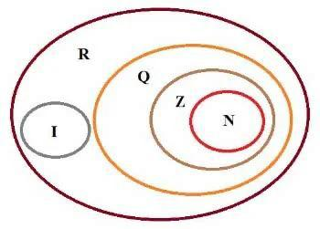
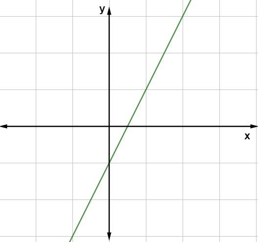

MATEMÁTICA
Conjuntos Numéricos
O que são os conjuntos numéricos?
Os conjuntos numéricos reúnem diversos
conjuntos cujos elementos são números. Eles são formados
pelos números naturais, inteiros, racionais, irracionais
e reais. O ramo da matemática que estuda os conjuntos
numéricos é a Teoria dos conjuntos.
Conjunto dos Números Naturais (N)
O conjunto dos números naturais é representado por N.
Ele reúne os números que usamos para contar (incluindo
o zero) e é infinito.
Subconjuntos dos Números Naturais
• N* = {1, 2, 3, 4, 5..., n, ...} ou N* = N – {0}: conjuntos dos números naturais
não-nulos, ou seja, sem o zero.
• Np = {0, 2, 4, 6, 8..., 2n, ...}, em que n ∈ N: conjunto dos números naturais
pares.
• Ni = {1, 3, 5, 7, 9..., 2n+1, ...}, em que n ∈ N: conjunto dos números naturais
ímpares.
• P = {2, 3, 5, 7, 11, 13, ...}: conjunto dos números naturais primos.
Conjunto dos Números Inteiros (Z)
O conjunto dos números inteiros é representado por Z.
Reúne todos os elementos dos números naturais (N) e
seus opostos. Assim, conclui-se que N é um subconjunto
de Z (N ⊂ Z)
Subconjuntos dos Números Inteiros
• Z* = {..., –4, –3, –2, –1, 1, 2, 3, 4, ...} ou Z* = Z – {0}: conjuntos dos números
inteiros não-nulos, ou seja, sem o zero.
• Z+ = {0, 1, 2, 3, 4, 5, ...}: conjunto dos números inteiros e não-negativos.
Note que Z+ = N.
• Z*+ = {1, 2, 3, 4, 5, ...}: conjunto dos números inteiros positivos e sem o zero.
• Z – = {..., –5, –4, –3, –2, –1, 0}: conjunto dos números inteiros não-positivos.
• Z*– = {..., –5, –4, –3, –2, –1}: conjunto dos números inteiros negativos e sem
o zero.
Conjunto dos Números Racionais (Q)
O conjunto dos números racionais é representado por Q.
Reúne todos os números que podem ser escritos na
forma p/q, sendo p e q números inteiros e q≠0.
Note que todo número inteiro é também número
racional. Assim, Z é um subconjunto de Q.
Importante ressaltar que as dízimas periódicas são
números racionais. Elas são números decimais que
se repetem após a vírgula, por exemplo: 1,44444...
Embora possua infinitas casas decimais, pode ser
escrito como a fração 13/9.
Subconjuntos dos Números Racionais
• Q* = subconjunto dos números racionais não-nulos, formado
pelos números racionais sem o zero.
• Q+ = subconjunto dos números racionais não-negativos,
formado pelos números racionais positivos e o zero.
• Q*+ = subconjunto dos números racionais positivos, formado
pelos números racionais positivos, sem o zero.
• Q– = subconjunto dos números racionais não-positivos,
formado pelos números racionais negativos e o zero.
• Q*– = subconjunto dos números racionais negativos, formado
números racionais negativos, sem o zero.
Conjunto dos Números Irracionais (I)
O conjunto dos números irracionais é representado por I.
Reúne os números decimais não exatos com uma
representação infinita e não periódica, por exemplo:
3,141592... ou 1,203040...
Conjunto dos Números Reais (R)
O conjunto dos números reais é representado por R.
Esse conjunto é formado pelos números racionais
(Q) e irracionais (I). Assim, temos que R = Q ∪ I.
Além disso, N, Z, Q e I são subconjuntos de R.
Mas, observe que se um número real é racional,
ele não pode ser também irracional. Da mesma
maneira, se ele é irracional, não é racional.
Subconjuntos dos Números Reais
• R*= {x ∈ R│x ≠ 0}: conjunto dos números reais não-nulos.
• R+ = {x ∈ R│x ≥ 0}: conjunto dos números reais não-negativos.
• R*+ = {x ∈ R│x > 0}: conjunto dos números reais positivos.
• R– = {x ∈ R│x ≤ 0}: conjunto dos números reais não-positivos.
Intervalos Numéricos
Há ainda um subconjunto relacionado com os
números reais que são chamados de intervalos.
Sejam a e b números reais e a < b, temos os
seguintes intervalos reais:
Intervalo aberto de extremos: ]a,b[ = {x ∈ R│a < x < b}
Intervalo fechado de extremos: [a,b] = {x ∈ R│a ≤ x ≤ b}
Intervalo aberto à direta de extremos: [a,b[ = {x ∈ R│a ≤ x < b}
Intervalo aberto à esquerda de extremos: ]a,b] = {x ∈ R│a < x ≤ b}
Propriedades dos Conjuntos Numéricos

• O conjunto dos números naturais (N) é um
subconjunto dos números inteiros: Z (N ⊂ Z).
• O conjunto dos números inteiros (Z) é um
subconjunto dos números racionais: (Z ⊂ Q).
• O conjunto dos números racionais (Q) é um
subconjunto dos números reais (R).
• Os conjuntos dos números naturais (N),
inteiros (Z), racionais (Q) e irracionais (I)
são subconjuntos dos números reais (R).
Função Polinomial
Uma função é chamada de função polinomial quando
a sua lei de formação é um polinômio. As funções
polinomiais são classificadas de acordo com o grau
de seu polinômio. Por exemplo, se o polinômio que
descreve a lei de formação da função tiver grau
dois, dizemos que essa é uma função polinomial do
segundo grau.
Para calcular o valor numérico de uma função
polinomial, basta substituir a variável pelo valor
desejado, transformando o polinômio em uma expressão
numérica. No estudo de funções polinomiais, é
bastante recorrente a representação gráfica. A função
polinomial do 1º grau tem gráfico sempre igual a uma
reta. Já a função do 2º grau possui gráfico igual a
uma parábola.
O que é uma função polinomial?
Uma função f : R → R é conhecida como função
polinomial quando a sua lei de formação é um
polinômio:
f(x) = anxn + an-1xn-1 + an-2xn-2 + … + a2x2 + a1x + a0
Grau da função polinomial
O que define o grau da função polinomial é o grau
do polinômio, então, podemos ter uma função
polinomial de qualquer grau.
Função polinomial do 1° grau
Para que uma função polinomial seja de grau 1 ou
polinomial do 1º grau, a lei de formação da função
deve ser f(x) = ax + b, com a e b sendo números
reais e a ≠ 0. A função polinomial de grau 1 é
conhecida também como função afim.
Exemplos:
• f(x) = -3x
• f(x) = -x + 4
• f(x) = 2x – 3
Gráficos de função polinomial
Para representar no plano cartesiano a função,
representamos, no eixo x, os valores de x, e a
imagem de f(x), por pontos no plano. Os pontos
no plano cartesiano são do tipo (n, f(n)).
Exemplo:
f(x) = 2x – 1

IMPORTANTE!
O gráfico de uma função de 1º grau é sempre uma reta.